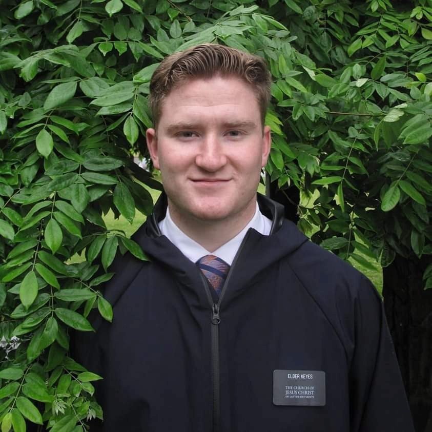

Austin Keyes | WDD 130

Hello! My name is Austin Keyes, and I am currently studying web development for a future degree in Mechanical Engineering.
I am exploring the possibility of enlarging my commissioned arts, as it is my hobby.
I like sports, art, and all kinds of technology items, from inventing to programming.
It’s nice to meet you!